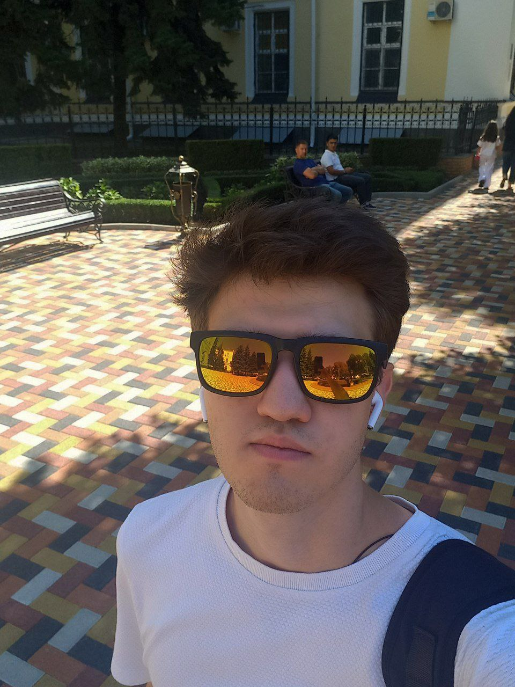

Для практической работы - 2026
Мы делаем проекты
Небольшая команда из трёх человек. Здесь собраны наши контакты и ссылки - найдите нас где угодно.
Небольшая команда из трёх человек. Здесь собраны наши контакты и ссылки - найдите нас где угодно.
18 лет, студент Северо-Кавказского федерального университета, направление - программная инженерия. Увлекаюсь фронтенд-разработкой: люблю работать с UI, вёрсткой и превращать дизайн в рабочий код. Стараюсь писать чистый и аккуратный код - считаю, что хороший интерфейс должен быть не только красивым, но и удобным.
18 лет, студент Северо-Кавказского федерального университета, направление - программная инженерия. В команде отвечаю за разработку и дизайн - люблю смотреть на проект как с технической стороны, так и с визуальной. Считаю, что хороший продукт рождается на стыке красивого интерфейса и чистого кода.

22 года, студент Северо-Кавказского федерального университета, направление - программная инженерия. В команде совмещаю роль контент-менеджера и разработчика - слежу за тем, чтобы содержание проекта было понятным и структурированным, и при этом участвую в написании кода. Считаю, что хороший проект начинается с правильно выстроенного контента.
Описание
Сайт-визитка команды из трёх студентов СКФУ, созданный в рамках практической работы по дисциплине «ИТ командной работы и проектной деятельности». Каждый участник - со своей ролью и зоной ответственности.
Цель
Получить опыт командной разработки, попрактиковаться в вёрстке и создать общую точку где можно найти каждого из нас.